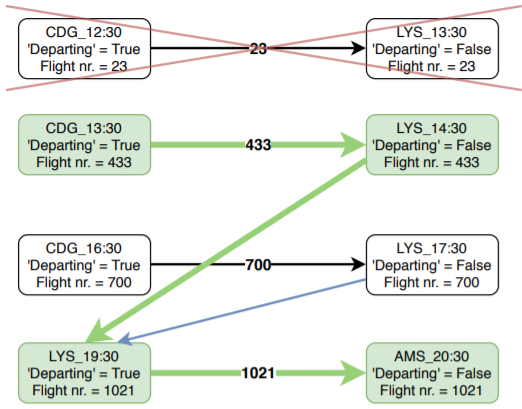

Methodology
Using the iGraph library for Python, the airports and departure- and arrival times were added as vertices as a unique couple.
Passengers from broken itineraries were fed through the shortest path algorithm.
The data below shows for each original itinerary the new composition of the itinerary.
Each column after the itinerary column represents a flight leg or transit period at a specific airport.
The flight leg is specified by the unique flight number and also shows the departure and destination airport.
The transit periods are defined by the end of the previous flight leg and the start of the next flight leg, at that specific airport.
Note: if no feasible alternative was found by the shortest path algorithm, all cells next to the itinerary were left blank.

Results
New Itinerary Composition Instance A
Results for instance A are shown below. Important figures: 13718 passengers whose itinerary was initially canceled was eventually
found a solution for by the shortest path algorithm. 13718 passengers equals just over 71% of the total amount of passengers with a broken itinerary.
A major improvement to be done here is to allow partial assignment of passengers from one specific itinerary to an alternative set of flights by the shortest path algorithm.
Currently, we see that itineraries with a large amount of passengers are usually canceled because the algorithm is trying to place them altogether..
A better approach would be to allow a part of those passengers to be assigned to a set of flights and look for another solution for the remaining passengers for that specific itinerary.
New Itinerary Composition Instance B
Methodology is the same as the one for instance A, results are shown below. It was found that only 27 passengers (26 percent of all passengers with a broken itinerary)
had their itinerary canceled. Therefore it was decided it would not be profitable to install new flights.